After installing and patching conbuilder, first thing is to click on Program | Activities, which brings up a second window,"Consists from activities". Scroll down to the route and activity you want to change engines in, and the player consist shows up at the top of the consists window, with AI traffic consists (if any) below that. Double click on the player consist, which brings it up:
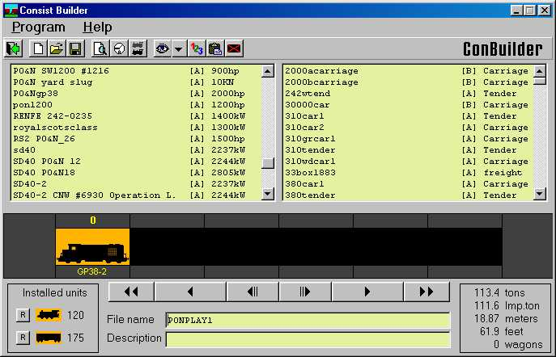
In the little window that shows the train, double click on the train icon to delete the GP38 from that spot.
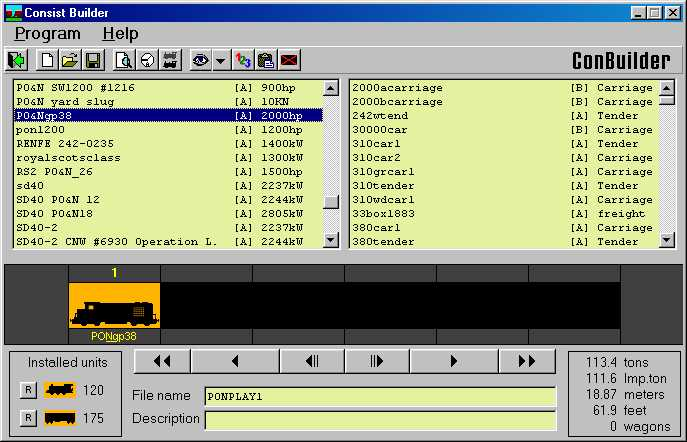
Next scroll down the left window, find the line for the engine you want to drive, and double click on the line. That drops the selected engine into the empty slot.
Click on Program | Save, and it will ask "Overwrite this consist?" Answer yes, and all activities that use that consist file for a player engine will now use the one you replaced it with.
Next thing is a little harder, replacing AI traffic trains. It's best to replace those with something that matches the horsepower to tonnage ratio as closely as possible, otherwise you'll have to go into the activity editor and edit the service to adjust the speed of the AI train by fiddling with the "expected performance" setting. If you can do all that you don't really need conbuilder or this tutorial anyway, so the best use of this would be to replace a BNSF SD40 with a Norfolk Southern SD40, for example. If you're replacing a geep with a dash 9, you'll probably want to add more cars to slow it down.
So do step one again, this time select one of the traffic consists.
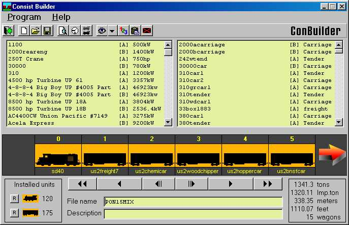
In the upper left window are all the engines, in the upper right all the cars. If you double click on one engine or car icon in the train window, then double click on a line in one of the upper windows, the engine or car you select in the upper window will be placed in the empty slot. If you haven't deleted any cars and there are no empty slots, it will start adding to the back of the train.
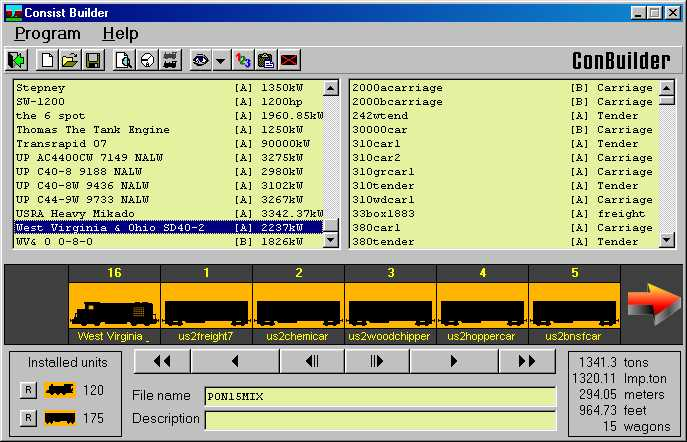
You can replace just the engine(s) for now, and come back to replace all the KUJU cars with your CSX boxcars or UP reefers after a little practice.
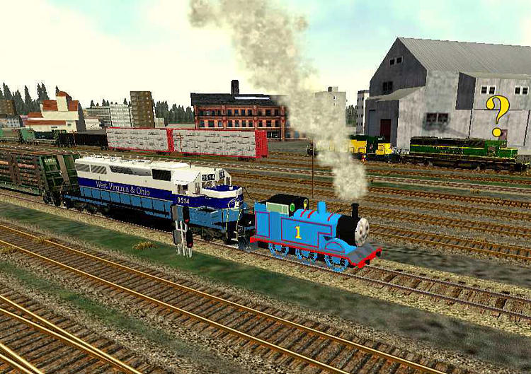
After that try it out in the sim, see if you have any wierd visitors from foreign roads driving around your route.
Well, one drawback to that, every activity that uses "PONPlay1.con" for the player service consist will use the K36 or whatever engine you replaced the default with, if you want variety you gotta get into creating your own consists and editing the different activities to use different engines. For that we're stuck with the activity editor itself, so after copying your \Trains folder to a backup, set your desktop to 1024x768 or above, grit your teeth and open the activity editor.
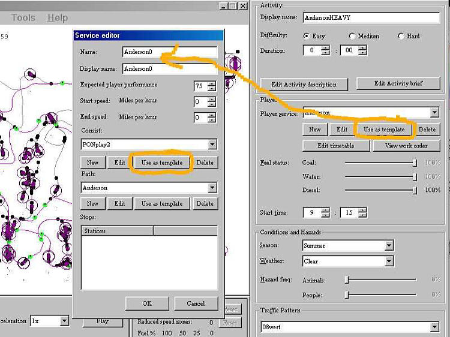
Wooo, scary. Well, you can ignore most of the stuff in here, we're only gonna use a couple of buttons. On the far right under "player service", click on the "use as template" button. That brings up the service editor, and automatically makes a new copy of that service, adding a number to the filename, so "Anderson.srv" becomes "Anderson0.srv", in this example. There's another "use as template" button in the service editor, clicking on that brings up the consist editor.
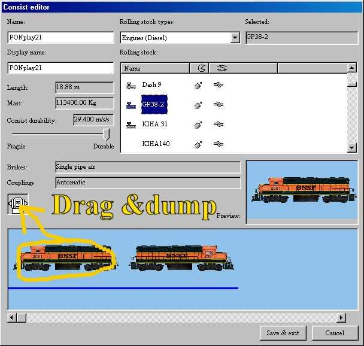
Since you clicked on "use as template" it created a clone of the consist, so now to edit it click on the engine in the lower window, hold the mouse button down and drag it to the little coupler icon and dump it.
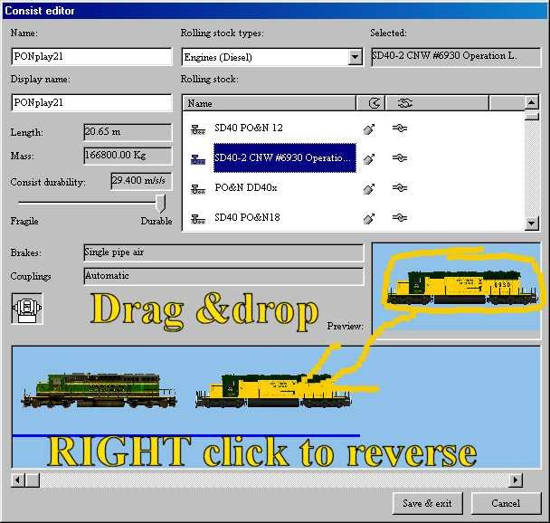
Now select the engine category, then the engine you want, and drag from the right side display window and drop into the bottom train window. Right clicking on the engine in the bottom window will reverse it, if you want one of them long hood forward. Save and exit, you have just created a new service with a new consist.
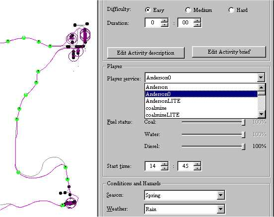
After clicking Okay to exit the service editor, go back to the "Player Service" on the right side, and click the drop down arrow. Select the new service you just created. Now click on File, Save, and exit the activity editor.
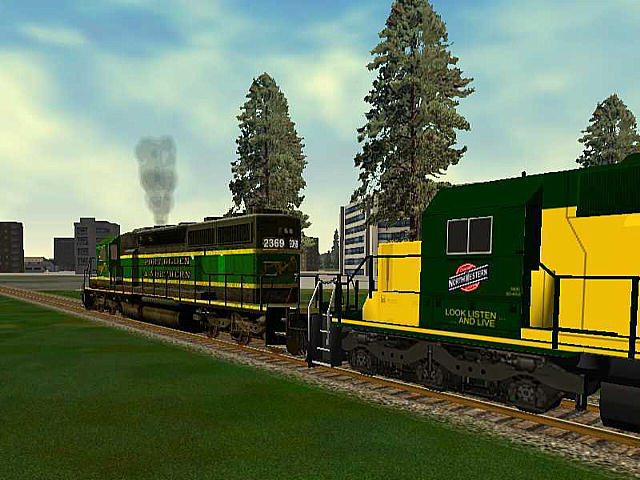
For that one activity you now have a player service that's different from the other activities, if you wish you can repeat these steps so that every activity uses a different engine or engines.
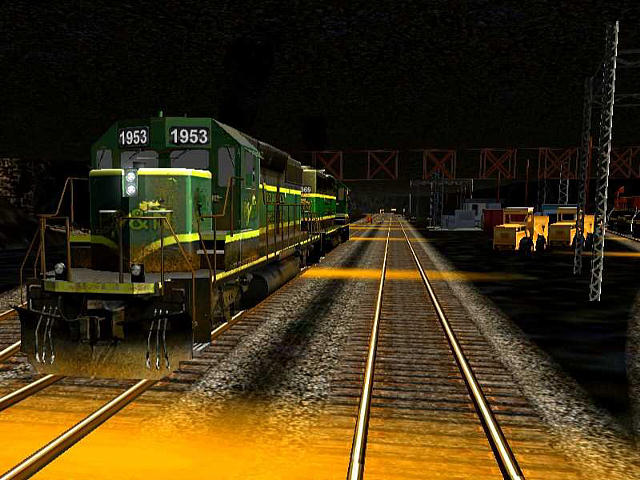
You can get as crazy as you want with this type of thing, the only limitation being a finite number of .con files allowed in \Consists due to a sim bug, I think the max number of consists you can have in the \Trains\Consists folder is 899.
Conbuilder has one more useful feature I should mention: the ability to show the engine/wagon with the data like here:
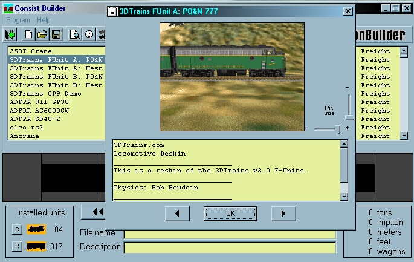
right click on the engine/wagon(on the highlite) and a picture+ data will show up.
Now before you all start screaming that it does not show an image, there needs to be an gif ot jpg image in the particular trainfolder of course, and it should have the same name as the .eng or .wag file i.e. in the Turkey steamloc folder a Turkey10.eng + turkey10.gif or Turkey50ftleg.wag + Turkey50ftleg.gif. It also would be nice if it is, a picture of that engine/wagon.